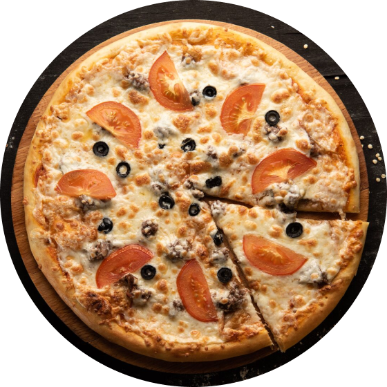
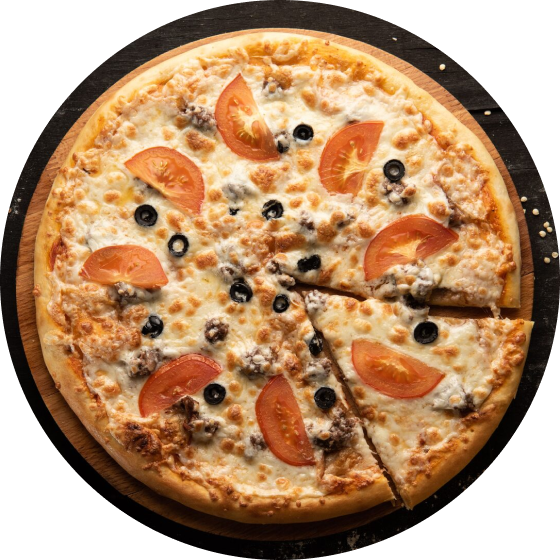

O verdadeiro sabor da Itália em cada detalhe.
Descubra ma experiência gastronômica autêntica e apaixonante, inspirada nas tradições e paisagens italianas. Da mesa à alma, cada prato conta uma história.
Descubra ma experiência gastronômica autêntica e apaixonante, inspirada nas tradições e paisagens italianas. Da mesa à alma, cada prato conta uma história.
Bem-vindo a um espaço onde tradição, elegância e sabor se encontram. Inspirado na herança das famílias italianas e na sofisticação das grandes tavolas da Toscana, nosso restaurante convida você a uma experiência gastronômica única e memorável.
Na La Tavola Italiana, cada prato é uma celebração à cultura e ao sabor. Da escolha dos ingredientes à apresentação à mesa, cultivamos o cuidado em cada detalhe. Nosso menu combina receitas clássicas — como o ossobuco alla milanese, a lasagna alla bolognese e o tiramisù artesanal — com um ambiente que evoca a alma da Itália: acolhedor, refinado e apaixonado pela boa comida.


Na La Tavola Italiana, a pizza é mais que um prato — é um legado. Preparadas com massa de fermentação lenta, assadas em forno de pedra e finalizadas com ingredientes frescos e importados, nossas pizzas homenageiam as tradições napolitanas e romanas, com um toque contemporâneo e sofisticado.
Da clássica Margherita ao sabor marcante da Tartufata, cada fatia é uma expressão autêntica do sabor italiano, servida com leveza, textura crocante e uma dose generosa de paixão.
Todas as pizzas são individuais (30 cm), com massa artesanal de fermentação natural e borda leve e aerada.
Molho de tomates pelati italianos, mozzarella de búfala, manjericão fresco e azeite extravirgem.
Mozzarella, gorgonzola, parmesão e stracchino sobre base de creme de leite fresco.
Creme de trufas negras, mozzarella fior di latte, cogumelos frescos salteados e lascas de parmesão.
Mozzarella, presunto cru italiano (Parma), rúcula fresca, tomate confit e lascas de grana padano.
Molho de tomate, mozzarella, salame picante italiano e toque de pimenta calabresa.
Berinjela e abobrinha grelhadas, pimentões assados, cebola caramelizada e pesto artesanal.
 


Na La Tavola Italiana, as massas são preparadas como manda a tradição: artesanalmente, com farinha de grano duro, ovos frescos e muito respeito pelas receitas que atravessaram gerações.
Cada prato é finalizado com molhos ricos e ingredientes nobres, refletindo a diversidade e sofisticação da gastronomia italiana — das colinas da Toscana às margens do Tibre, em Roma.
Sabores autênticos, texturas perfeitas e uma apresentação que convida à celebração da boa mesa.

TMassas frescas produzidas diariamente, servidas com molho artesanal e acompanhadas de pão italiano tostado com azeite.
Massa longa com ragu de carne bovina cozido lentamente em vinho tinto, tomate San Marzano e ervas frescas.
Ravioli artesanal recheado com ricota fresca, toque de limão siciliano, servido com manteiga de sálvia e nozes tostadas.
Spaghetti com guanciale crocante, gema cremosa, pecorino romano e pimenta-do-reino moída na hora.
Nhoque de batata ao molho de tomate pelado, mozzarella gratinada e folhas de manjericão.
Fettuccine fresco com cogumelos porcini italianos, cebola-roxa, vinho branco e creme leve de parmesão.
Camadas de massa artesanal, ragu à bolonhesa, molho bechamel e mozzarella gratinada.
Massas sazonais com ingredientes frescos do dia, selecionados de acordo com a estação. Consultar disponibilidade

As sobremesas da La Tavola Italiana são uma homenagem à doçura das tradições familiares italianas.
Feitas com ingredientes selecionados e apresentadas com delicadeza, cada criação busca mais do que apenas agradar ao paladar — ela desperta memórias, sensações e um sentimento de aconchego.
Do clássico tiramisù ao delicado semifreddo, nossas sobremesas são o final perfeito para uma experiência memorável.
Todas as sobremesas são preparadas artesanalmente, com receitas autênticas e apresentação refinada.


Na La Tavola Italiana, cada refeição é pensada para ser especial — seja um jantar romântico, um almoço em família, uma celebração ou apenas o prazer de saborear a verdadeira cozinha italiana. Reserve sua mesa com antecedência e desfrute de um atendimento personalizado em um ambiente elegante e acolhedor.
Via San Lorenzo, 148
40125 Bologna, Emilia-Romagna - Italia
reservas@latavolaitaliana.com
+39 051 987 6543